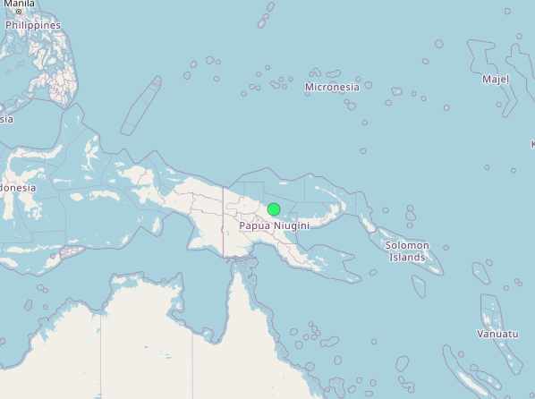
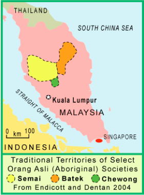
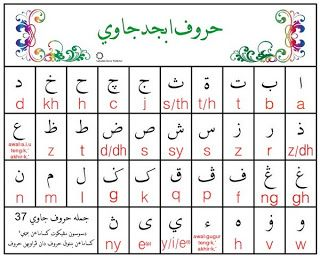
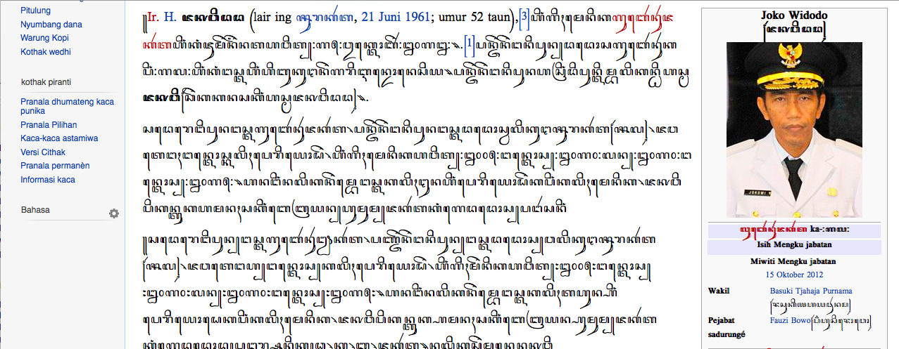
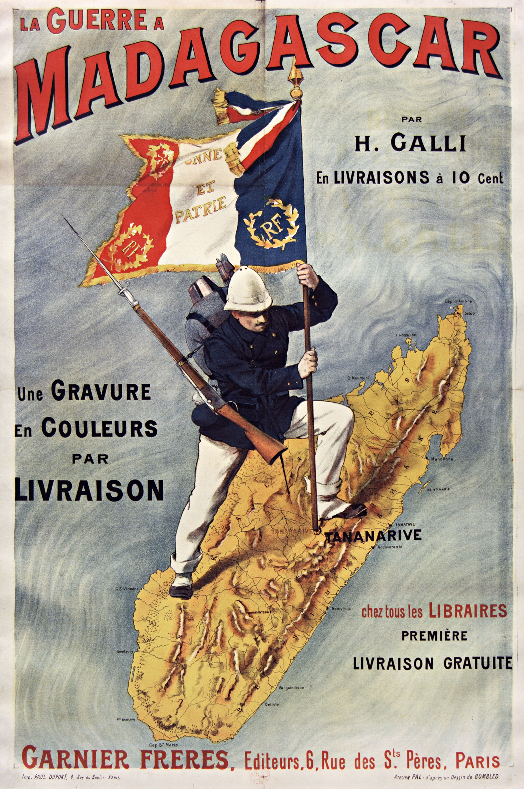

Borrowing (cont.) and Midterm Review
LING 150C, Week 9
![]()
October 22, 2026
Reminders
Writing Assignment 1 Final is due Friday, October 23 at 11:59pm.
Quiz #4 opens tomorrow (Friday, October 23) and closes Monday, October 26 at 11:55pm. It includes borrowing (Ch. 15).
Midterm Exam: Tuesday, October 27, in class, open notes (no laptops). Weeks 1-8. Borrowing is not on the midterm.
Today’s Plan
Part 1: Finish borrowing (about 20 min)
- Review from Tuesday’s WOLD lab
- Language planning: nests, purism, and the Lexicon Committee
- Putting it together
Part 2: Midterm review (about 50 min)
- Format, rules, and what to put in your notes
- Quick-fire recap, Weeks 1-8
- Practice with data: sound correspondences, Bislama, a Hawaiʻi Pidgin timeline
- Planning an essay together
Part 1: Finishing Borrowing
Warm-Up: What Did the Data Say? (3 min)
In your group (same language as Tuesday), take 2 minutes to find on your worksheet:
- Your language’s % clearly borrowed
- Its biggest donor, and why that language was the donor
- One surprise
Remind yourself of what you found, and briefly discuss comparisons with what other groups shared on Tuesday
Report-Out: What Patterns Do We See?
| Language | % clearly borrowed | Top donor and why | Surprise |
|---|---|---|---|
| Hawaiian | |||
| Takia | |||
| Ceq Wong | |||
| Indonesian | |||
| Malagasy |
Discuss: Which language borrowed the most? Which donor languages are not European? What do the eight comparison meanings have in common?
What the Database Shows
| Language | Clearly borrowed | Biggest donors |
|---|---|---|
| Hawaiian | 12.7% | English, Greek, Māori |
| Takia | 23.1% | English, Tok Pisin, Bargam |
| Ceq Wong | 33.6% | Malay (95%) |
| Indonesian | 30.2% | Sanskrit, Dutch, Arabic |
| Malagasy | 12.5% | French, Malay, English |
Patterns: introduced things are borrowed; body parts and kin words mostly are not; the donor depends on who the language was in contact with.





Who Decides? Language Planning
Language Nests and the Purist Turn
Language planning = making and enforcing decisions on language use: education, writing systems, translators, and which words to use for new concepts.
- In the 1800s, nearly all Pacific language planning was done by religious organizations
- Hawaiian and Māori seemed headed for extinction ~50 years ago. Activists set up immersion preschools, language nests: kōhanga reo (Aotearoa, 1982) and pūnana leo (Hawaiʻi, 1983), which grew into schools and universities
- Adults wanted to use the language at home and work, so they needed thousands of new words. The Polynesian Languages Forum (1991) coordinated this
- Most activists wanted to distance the language from colonial languages: avoid loans as much as possible, build words by compounding and expansion
Computer: kamepiula (loan) or lolouila (lolo ‘brain’ + uila ‘electricity’)? Māori: rorohiko (roro ‘brain’ + hiko ‘spark’).
Debate (3 min): Is a “purist” policy good for a small language, when borrowing is a natural process?
How Does a Committee Make a Word?
The Hawaiian Lexicon Committee (founded 1987; kūpuna and native speakers from the start) meets 4-6 times a year. Every word must be approved at two meetings. Their dictionary, Māmaka Kaiao, records ten strategies:
| Strategy | Example |
|---|---|
| Describe the concept in Hawaiian words | uila mahu pele ‘geothermal electricity’ (‘electricity-steam-volcano’) |
| Combine words | poelele ‘satellite’ (poe ‘buoy’ + lele ‘fly’); hamulau ‘herbivore’ (hamu ‘to chew’ + lau ‘leaf’) |
| Shorten and combine | ikehu ‘energy’ (ika ‘strength’ + ehu ‘lively’) |
| Add affixes | kalaianiau ‘climatology’ (kalai- ‘study of’ + aniau ‘climate’) |
| Extend an old word | haumia ‘pollution’ (old word ‘defiled, unclean’); hoʻoili ‘download’ (hoʻo- ‘cause’ + ili ‘transfer’; also ‘transplant’) |
| Borrow from another Polynesian language | pounamu ‘jade’ (Māori); makahiʻo ‘explore’ (maka ‘eye’ + Tahitian hiʻo ‘look’) |
| Hawaiianize a foreign word | naelona ‘nylon’; kaimine ‘saimin’ (Japanese); kokeiʻa ‘prairie dog’ (Ute); ʻōmā ‘lobster’ (French homard) |
Discuss: The committee builds first but still borrows. Is that purism? What would you call it?
Putting It Together: Borrowing
| Question | Answer |
|---|---|
| What is borrowing? | Sounds, words, endings, structures, meanings copied from another language; not code-switching |
| Why borrow? | Needed (new things) or intimate (close contact); also prestige |
| What are the alternatives? | Compounding, semantic expansion, calques |
| What happens to loans? | Sound adaptation, semantic shift, reanalysis |
| What gets borrowed? | Nouns > verbs/adjectives > function words; introduced things (WOLD data); body and kin words mostly not |
| Who decides? | Missionaries, communities, language planners: borrow or build? |
Exit ticket (2 min): Pick one loanword (from Tuesday, or one you use). What does it tell us about the relationship between the two languages, and how was it adapted?
Part 2: Midterm Review
The Exam: Format and Rules
Tuesday, October 27, in class. Weeks 1-8. 100 points.
| Part | What it looks like | # of Q | Time |
|---|---|---|---|
| A. Quick questions | Multiple choice, true/false, fill-in | 12 | 10 min |
| B. Short answer | 2-4 sentences each | 11 | 25 min |
| C. Working with data | Word list, a Bislama sentence, a Hawaiʻi Pidgin timeline | 3 | 20 min |
| D. Essay | Choose 1 of 3, two to three paragraphs | choose 1 of 3 | 20 min |
- Open notes: handwritten or printed. No laptops, phones, textbook, or internet
- Not on the exam: Ch. 15 (borrowing)
What to Put in Your Notes
One page per week works well. For each reading and lecture:
- Key terms, each with a one-line definition
- One example for each concept (a word, a language, a sentence)
- The “so what”: the author’s main claim in one sentence
Two pages worth building:
- A timeline of Hawaiian Pidgin
- A comparison chart: Vanuatu vs. Samoa (the three factors for diversity)
Remember: open notes help you find an answer, not write one. Practice answering without looking.
Weeks 1-4: Can You Explain…?
Weeks 1-2: Geography and Austronesian
- Where are Pacific languages concentrated, and why does it matter?
- How far does Austronesian stretch? Where does it come from?
- What is Oceanic, and how does it relate to Austronesian?
Week 3: Historical linguistics
- Proto-language, subgroup, family tree
- Shared innovation vs. shared retention: which proves a subgroup?
Week 4: Sounds and grammar
- Phonemes and typical Pacific sound inventories
- Inclusive vs. exclusive “we”: what is it, which languages have it?
Weeks 5-6: Comparison and diversity
- Cognate vs. borrowing; regular sound correspondences
- Why “Papuan” is a label, not a family
- Lynch’s four categories; three factors for diversity; reciprocal multilingualism
Weeks 7-8: Can You Explain…?
Week 7: Micronesia and Polynesia
- Culture area vs. language family
- Which Micronesian languages are not Oceanic? The Japanese layer in Palauan
- The Polynesian family tree: Tongic, Nuclear Polynesian, Samoic-Outlier, East Polynesian
- Polynesian expansion; where was Hawaiʻi settled from?
Week 8: Pidgins and creoles
- Pidgin vs. creole; lexifier; substrate
- “Simple is not broken”: parataxis, function words, ambiguity
- Bislama, Tok Pisin, Pijin
- Four language ideologies in Honiara
- Hawaiʻi: Pidgin Hawaiian, Pidgin English, the creole (about 1905-1920); Hawaiian, Cantonese, Portuguese, and Japanese influence
- Attitudes towards Pidgin
Quick-Fire Recap (5 min)
With a partner. 20 seconds each. No notes.
- What is the strongest evidence that two languages are related, not borrowed?
- A change shared by some languages but not others is a shared ______.
- Match: Hawaiian, Tok Pisin, English in Fiji, Fiji Hindi to Lynch’s categories.
- Which factor explains diversity if groups stay apart for a long time?
- A pidgin has no ______ speakers.
- Which language shaped Pidgin’s grammar more: Japanese or Portuguese?
- What do yumi and mifala show (first person plural pronouns in Melanesian English Creoles; we)?
Practice 1: Sound Correspondences (7 min)
| Gloss | Hawaiian | Samoan | Tongan | Māori |
|---|---|---|---|---|
| fire | ahi | afi | afi | ahi |
| blood | koko | toto | toto | toto |
| canoe | waʻa | vaʻa | vaka | waka |
| five | lima | lima | nima | rima |
In pairs:
- State two regular correspondences between Hawaiian and Samoan.
- Hawaiian kalo ‘taro’: predict the Samoan form, and explain.
- Are these words cognates or borrowings? Give one reason.
- What would make you suspect borrowing for one word?
Practice 2: Reading Bislama (7 min)
Mifala i talem se Jeni i stap. ‘We said that Jenny was here.’
Yumi go. (‘Let’s go: you and me’) vs. Mifala i go. (‘We go: not you’)
In pairs:
- Which words come from English? Which grammar is not English?
- What is the i before the verb? What is se?
- Which “we” is used in the first sentence? Why does that matter?
- Someone says “Bislama is just broken English.” Answer in two sentences.
Practice 3: From Pidgin to Creole in Hawaiʻi (7 min)
| Date | Event |
|---|---|
| 1835 | First sugar plantation opens. Hawaiians still rule; Hawaiian is the language of government and of schooling for non-European children |
| 1852-76 | About 2,000 laborers from China arrive (mostly Cantonese speakers) |
| 1878-87 | More than 10,000 laborers from Portugal arrive |
| 1884-1924 | Over 200,000 laborers from Japan arrive |
| About 1900 | The first locally born Chinese and Portuguese children appear; many are spoken to in Pidgin English as newborns |
| 1920-30 | Locally born children of immigrants equal, then outnumber, the foreign born |
In pairs:
- Which language was the basis of the first plantation pidgin? What in the timeline explains that?
- Give one piece of evidence that a creole existed by about 1920. What makes it a creole, not a pidgin?
- A friend says “Pidgin never changed: it’s just plantation English.” Use the timeline to answer in two sentences.
Planning an Essay Together (8 min)
Prompt: How can linguists use language evidence to work out how Pacific peoples spread across the islands? Use at least two kinds of evidence and two examples.
| Piece | What goes here | Source to use |
|---|---|---|
| Thesis | What language can (and cannot) tell us | |
| Evidence 1 | Regular sound correspondences: relatedness, not borrowing | |
| Evidence 2 | Shared innovations: subgroups and the family tree | |
| Example | Austronesian from Taiwan; the Polynesian tree; Pawley (1966); Outliers | |
| Limits | Geography, culture areas, and “Papuan” are not language families |
Rule of thumb: each paragraph = one claim, one example, one “so what.”
Your Plan for the Weekend
- Build the Pidgin timeline and the Vanuatu vs. Samoa chart for your notes
- Before Tuesday: write one sentence for each reading (author’s main claim) and one example
- Practice one data problem and one essay outline without notes, then check
- Quiz #4 (borrowing) is open Friday through Monday: do it after you have studied
Questions? Office hours W/F 1:30-2:30, Moore 574. Email: klineal@hawaii.edu
For Tuesday
- Midterm Exam: Tuesday, October 27, in class. Bring your notes and a pen
- WA1 Final: due Friday, October 23 at 11:59pm
- Quiz #4 (borrowing): opens Friday, closes Monday at 11:55pm
- Read Ch. 17 - Hawaiian Literacy (Schütz) for the Thursday
LING 150C